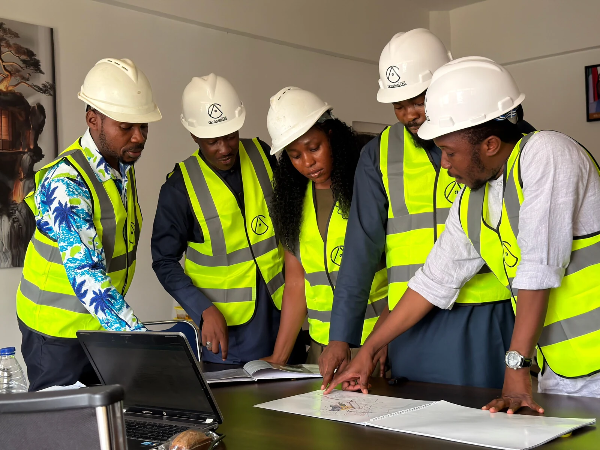
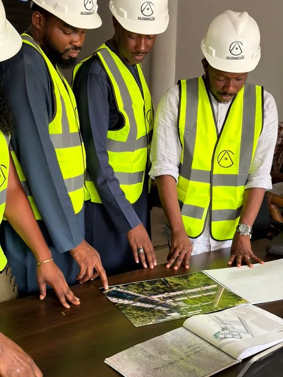

Management and business consulting that clarifies priorities, strengthens operations and turns complex goals into an actionable roadmap.
Discuss a consulting need ↗A coordinated group built for decisions, delivery, housing support and financial clarity.
CONSULTATIVE CONTRACTING RESIDENTIAL ACCOUNTING
One group. Four focused capabilities.
Professional expertise that moves from advice to action.
A3FS brings together Farier Consulting & Contracting, Farier Residential Management, and FactsTX Accounting so clients can move with more clarity, coordination and confidence.
Explore our capabilities
Connected expertise
Strategy, contract delivery, supportive housing operations and reliable accounting.
Trusted across
Consulting
Contracting
Residential Support
Accounting
About us
Independent thinking. Coordinated execution.
We help organizations, communities and property stakeholders navigate complex needs with practical advice, dependable delivery and a disciplined approach to service.

Group view
01 Diagnose
02 Deliver
03 Report
Our services
Discover our specialist capabilities.
Each division brings focused expertise. Together, they create a more complete path from planning and compliance to implementation and long-term support.
Construction coordination, facility support, project oversight and dependable contract delivery for public and private sector needs.
Discuss a project ↗Mission-driven residential support focused on safe housing, dignified resident experience, property coordination and community stability.
Explore residential support ↗Bookkeeping, reporting, tax support and organized financial systems that help businesses understand their numbers and make confident decisions.
Talk to FactsTX ↗Our process
A professional approach without unnecessary complexity.
Every engagement is structured to create visibility, reduce surprises and keep decisions connected to outcomes.
Assessment
We understand the need, operating context, risk and desired outcome before recommending a path.
Strategy
We translate insight into a clear scope, priorities, responsibilities and delivery sequence.
Execution
We coordinate people, timelines and deliverables with disciplined communication and oversight.
Accountability
We document progress, surface issues early and maintain focus on agreed standards and outcomes.
Representative work
One group, multiple ways to create value.
Our work spans strategic advisory, contract execution, residential support and financial operations.
Consultative
Business Strategy
Decision support and operating clarity.

Contracting
Project Coordination
Structured oversight from scope to completion.
Residential
Supportive Housing Operations
Resident-centered coordination and property care.
Accounting
Financial Organization
Reliable records, reporting and compliance support.
Integrated
Cross-Sector Coordination
Connected expertise for complex client needs.
Insight + oversight
Data-informed decisions. Human-centered delivery.
We combine attentive service with organized information, practical reporting and clear communication so decisions are based on what is actually happening.
Current focusCoordinated delivery
StatusClear next steps
FAQ
Frequently asked questions.
Find quick answers about how A3FS works and how the specialist divisions connect.
Ask a questionEach division provides specialist support, while the group structure makes it easier to coordinate needs that cross strategy, delivery, housing and finance.
Yes. Clients can work with the division that matches their immediate need without committing to any additional service.
Yes. Its residential work is mission-driven, with an emphasis on housing stability, dignified support and responsible property coordination.
Farier supports construction and facility services, project coordination, operational delivery and contracting needs for public and private organizations.
Start with a brief conversation about your need, desired outcome and timeline. The appropriate division can then recommend the clearest next step.
Start here